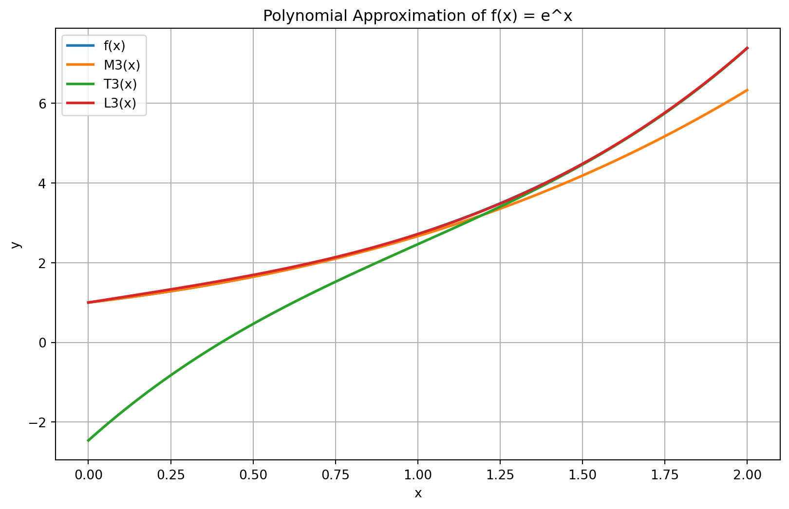
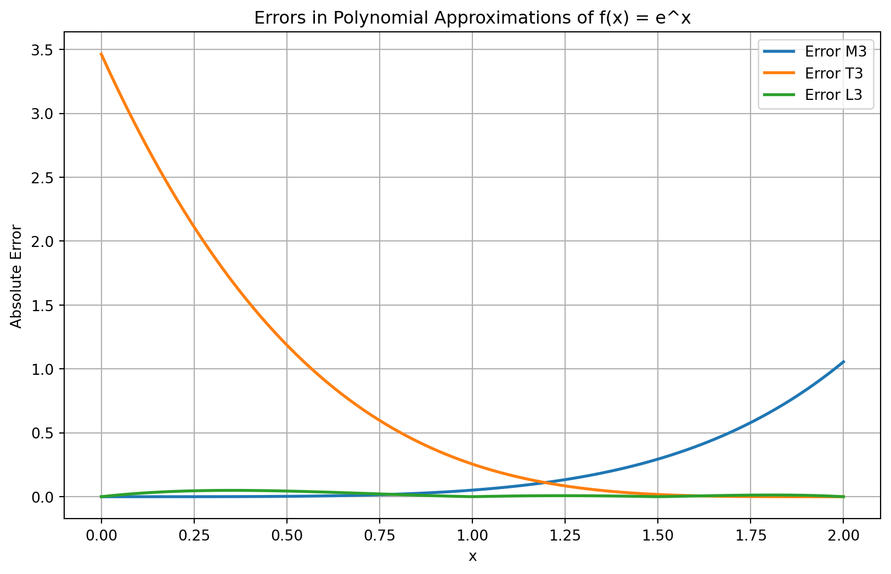
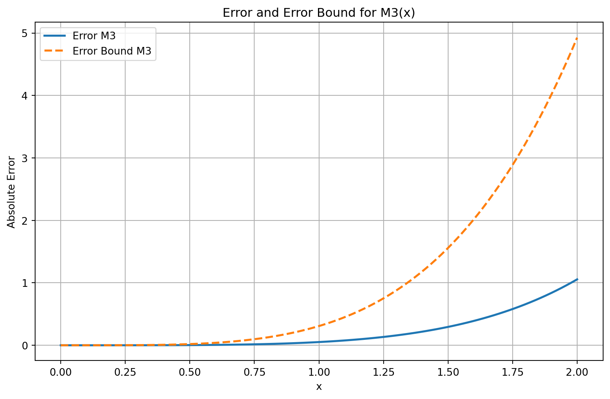
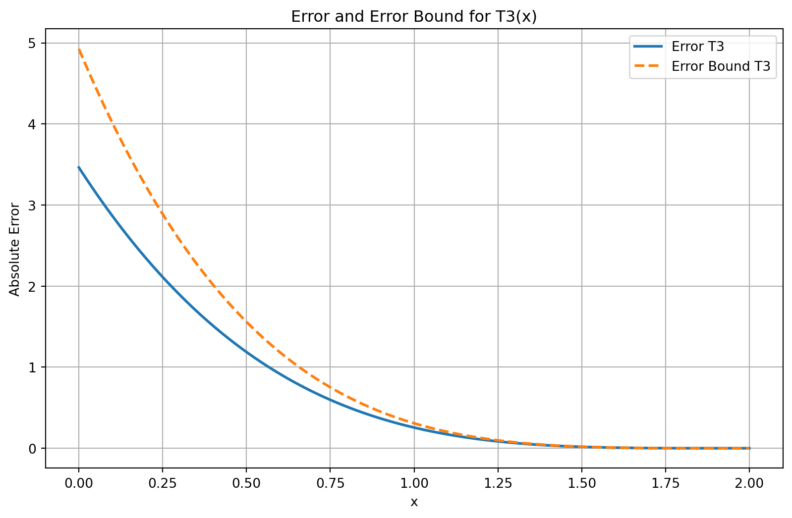
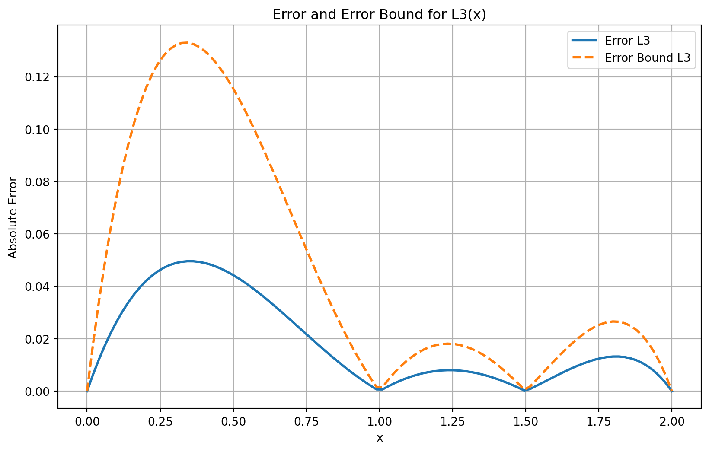

import numpy as np
import sympy as sp
import matplotlib.pyplot as plt
from tabulate import tabulateIntroduction
In this project, we will use a Maclaurin Polynomial, a Taylor Polynomial, and a Lagrange Polynomial to approximate \(f(x) = e^{x}\) on \([0,2]\), and compare the performance of these approximations based on their absolute error over the interval. We will begin with a by-hand construction of the polynomials accompanied by interpolation testing and the construction of error bounds, then create a Python program to compute polynomials that we can test against our own work and existing implementations.
Analysis
We will begin with a by-hand construction of 3rd degree Maclaurin and Taylor Polynomials for \(f(x) = e^{x}\).
Maclaurin Polynomial
To begin, we will create a 3rd degree Maclaurin Polynomial for \(f(x) = e^{x}\), \(M_3(x)\). Since this will be a 3rd degree Taylor Polynomial, we will need to find the first 4 derivatives of \(f(x)\) - the 4th derivative will be used to find \(R_3(x)\). Since \(f(x) = e^x\), \(f'(x) = e^x = f(x)\). So:
\(f(x) = f'(x) = f''(x) = f'''(x) = f^{(4)}(x) = e^x\)
From here, we can construct \(M_3(x)\) using Taylor’s Theorem with \(x_0 = 0\). Taylor’s theorem states that, for a function \(f(x)\) with \(n + 1\) derivatives (where \(n\) is an integer, \(n ≥ 0\)) on an interval \((a, b)\) and a point \(x_0 ∈ (a, b)\), \(f(x)\) can be approximated on \((a, b)\) by
\(f(x) = \sum_{k=0}^{n} \frac{f^{(k)}(x_0)}{k!}(x-x_0)^k + R_n(x)\)
where \(R_n(x) = \frac{f^{(n+1)}(ξ_x)}{(n+1)!}(x-x_0)^{n+1}\), and \(ξ_x ∈ (x, x_0)\)
Using the derivatives calculated above and Taylor’s Theorem, we can construct \(M_3(x)\) as follows:
\(M_3(x) = f(0)+f^{(1)}(0)(x-0)+ \frac{f^{(2)}(0)}{2!}(x-0)^2+\frac{f^{(3)}(0)}{3!}(x-0)^3\)
\(M_3(x) = e^0+e^0(x-0)+ \frac{e^0}{2!}(x-0)^2+\frac{e^0}{3!}(x-0)^3\) \(M_3(x) = 1+x+\frac{1}{2}(x)^2+\frac{1}{6}(x)^3\)
Here, \(R_3(x) = \frac{e^{\xi_x}}{(4)!}(x)^{4}\), with \(ξ_x ∈ (x, 0)\)
Interpolation Test
We know that Taylor (and Maclaurin) Polynomials are interpolating; that is, if \(f(a)=b\) then \(T_n(a)=b\). Using this fact, we can verify that our \(M_3(x)\) is correct by testing using our known \(x_0\), \(0\).
\(f(0) = e^{0} = 1\).
\(M_3(0) = 1+(0)+\frac{1}{2}(0)^2+\frac{1}{6}(0)^3 = 1\)
Since \(f(0)=M_3(0)\), we can verify \(M_3(x)\) was correctly constructed.
Error Bound
We can construct an error bound for \(M_3(x)\) by examining \(|R_3(x)|\), the absolute error of \(M_3(x)\).
\(|R_3(x)| = |\frac{e^{\xi}}{(4)!}(x)^{4}|\).
Apart from \(x\), the term that will bound \(|R_3(x)|\) is \(e^{ξ_x}\). According to Taylor’s Theorem, \(ξ_x ∈ (x_0,x)\), so \(ξ_x ∈ (0,2)\) since we are interested in approximating \(f(x)\) within \([0,2]\). Because the function \(e^{ξ_x}\) is monotonically increasing, its largest value on the interval \([0,2]\) will occur at the right endpoint of that interval, at \(\xi_x = 2\).
So the error bound becomes:
\(|R_3(x)| \le \frac{e^{2}(x)^4}{4!} = \frac{e^{2}(x)^4}{24}\) #### Error Bound Test
We will test this error bound for our approximation for \(x=1\). For \(x=1\), our error bound becomes \(\frac{e^{2}(1)^4}{24} \approx 0.3078\). Using Desmos, we can find that \(f(1) \approx 2.7183\) and \(M_3(1) \approx 2.6667\), giving us the absolute error \(0.0516\). \(0.0516 < 0.3078\), so we are well within our error bound.
Taylor Polynomial
We will repeat the above process with \(x_0 = 2\) to construct \(T_3(x)\). Using Taylor’s Theorem and the same derivatives as before:
\(T_3(x) = f(2)+f^{(1)}(2)(x-2)+ \frac{f^{(2)}(2)}{2!}(x-2)^2+\frac{f^{(3)}(2)}{3!}(x-2)^3\)
\(T_3(x) = e^2+e^2(x-2)+ \frac{e^2}{2!}(x-2)^2+\frac{e^2}{3!}(x-2)^3\)
Here, \(R_3(x) = \frac{e^{\xi_x}}{(4)!}(x-2)^{4}\), with \(ξ_x ∈ (x, 2)\)
Interpolation Test
As explained previously, we should be able to get every known value of \(f(x)\) out of \(T_3(x)\). We will test this with our known \(x_0\) value of \(2\).
\(f(2) = e^{2}\)
\(T_3(2) = e^2+e^2(2-2)+ \frac{e^2}{2!}(2-2)^2+\frac{e^2}{3!}(2-2)^3\)
\(T_3(2) = e^{2} + 0 + 0 + 0\)
\(T_3(2) = e^{2}\)
Since \(f(2)=T_3(2)\), we can verify \(T_3(x)\) was correctly constructed.
Error Bound
Constructing an error bound for \(T_3(x)\) is similar to the process used to construct one for \(M_3(x)\). The absolute error \(|R_3(x)| = |\frac{e^{\xi}}{(4)!}(x-2)^{4}|\). As before, \(e^{ξ_x}\) is the main component other than \((x-2)^4\) that will bound the error function. Based on our previous calculations, we can surmise that this \(|R_3(x)|\) will also attain its maximum value when \(ξ_x = 2\). So, the error bound becomes:
\(|R_3(x)| \le \frac{e^{2}(x-2)^4}{4!} = \frac{e^{2}(x-2)^4}{24}\)
Error Bound Test
As above, we will test this error bound for our approximation for \(x=1\). For \(x=1\), our error bound becomes \(\frac{e^{2}(1-2)^4}{24} \approx 0.3078\). Using Desmos, we can find that \(f(1) \approx 2.7183\) and \(T_3(1) \approx 2.4630\), giving us the absolute error \(|R_3(1)| \approx 0.2552\). \(0.2552 < 0.3078\), so again, we are well within our error bound.
Lagrange Polynomial
Lastly, we will approximate \(f(x)\) using the divided difference form of a Lagrange Polynomial. For a 3rd degree Lagrange Polynomial:
\(f(x) = f[x_0] + f[x_0, x_1](x-x_0) + f[x_0, x_1, x_2](x-x_0)(x-x_1) + f[x_0, x_1, x_2, x_3](x-x_0)(x-x_1)(x-x_2) + R_3(\xi_x)\)
where \(R_3(\xi_x) = \frac{f^{(4)}(\xi_x)}{4!}(x-x_0)(x-x_1)(x-x_2)(x-x_3)\), and \(\xi_x \in (x_0, x_1, x_2, x_3, x)\).
Here, \(f[x_0, ..., x_n]\) indicates the \(n\)th divided difference. The table below shows the divided differences for \(f(x) = e^x\), given \(x_0 = 0\), \(x_1 = 1\), \(x_2 = 1.5\), \(x_3 = 2\), as calculated on Desmos.
| \(x_i\) | \(f[x_0]\) | \(f[x_0,x_1]\) | \(f[x_0,x_1,x_2]\) | \(f[x_0,x_1,x_2,x_3]\) |
|---|---|---|---|---|
| 0.0 | 1.0000 | 1.7183 | 1.2057 | 0.5411 |
| 1.0 | 2.7183 | 3.5268 | 2.2879 | |
| 1.5 | 4.4817 | 5.8147 | ||
| 2.0 | 7.3891 |
Using these to construct \(L_3(x)\):
\(L_3(x) = 1 + 1.7183(x-0) + 1.2057(x-0)(x-1) + 0.5411(x-0)(x-1)(x-1.5)\)
Here, \(R_3(\xi_x) = \frac{e^{\xi_x}}{4!}(x-0)(x-1)(x-1.5)(x-2)\), with \(\xi_x \in (0, 2, x)\)
Interpolation Test
Since Lagrange Polynomials are interpolating, we expect \(L_3(x_n) = f(x_n)\) for all \(x_n\) used to construct \(L_3(x)\).
For \(x=x_0=0\):
\(f(0) = e^0 = 1\)
\(L_3(0) = 1 + 1.7183(0) + 1.2057(0)(1) + 0.5411(0)(-1)(-1.5)\)
\(L_3(0) = 1 + 0 + 0 + 0\)
\(L_3(0) = 1\)
For \(x = x_1 = 1\):
\(f(1) = e^1 = e \approx 2.7183\)
\(L_3(1) = 1 + 1.7183(1) + 1.2057(1)(0) + 0.5411(1)(0)(-0.5)\)
\(L_3(1) = 1 + 1.7183 + 0 + 0\)
\(L_3(1) = 2.7183\)
For \(x = x_2 = 1.5\):
\(f(1.5) = e^1.5 \approx 4.4817\)
\(L_3(1.5) = 1 + 1.7183(1.5) + 1.2057(1.5)(0.5) + 0.5411(1.5)(0.5)(0)\)
\(L_3(1.5) = 4.4817 + 0\)
\(L_3(1.5) = 4.4817\)
For \(x=x_3=2\):
\(f(2) = e^2 \approx 7.3891\)
\(L_3(2) = 1 + 1.7183(2) + 1.2057(2)(1) + 0.5411(2)(1)(0.5)\) \(L_3(2) = 7.3891\)
Since \(L_3(x_n) = f(x_n)\) for all \(x_n\) used to create \(L_3(x)\), \(L_3(x)\) interpolates as expected and thus was likely constructed correctly.
Error Bound
Our error formula for this Lagrange Polynomial is \(R_3(\xi_x) = \frac{e^{\xi_x}}{4!}(x-0)(x-1)(x-1.5)(x-2)\), with \(\xi_x \in (0, 2, x)\).
Just like with the Maclaurin and Taylor polynomials, the term we need to focus on to find the error bound is \(e^{\xi_x}\). Since we are still interested in approximating \(f(x)\) over \([0, 2]\), and since \(e^{\xi_x}\) is monotonically increasing, the maximum absolute value of \(e^{\xi_x}\) occurs at \(\xi_x = 2\). So our error bound becomes:
\(|R_3(\xi_x)| \le |\frac{e^{2}}{4!}(x-0)(x-1)(x-1.5)(x-2)|\) \(|R_3(\xi_x)| \le |\frac{e^{2}}{24}(x-0)(x-1)(x-1.5)(x-2)|\)
Error Bound Test
This time, we will test this error bound for our approximation for \(x=0.5\), since that is not a point of interpolation. For \(x=0.5\), our error bound becomes \(|\frac{e^{2}}{24}(0.5-0)(0.5-1)(0.5-1.5)(0.5-2)| \approx 0.1154\). Using Desmos, we can find that \(f(0.5) \approx 1.6487\) and \(L_3(0.5) \approx 1.693\), giving us the absolute error \(|R_3(0.5)| \approx 0.0442\). \(0.0442 < 0.1154\), so we are well within our error bound once more.
Performance Prediction
All three of \(M_3(x)\), \(T_3(x)\), and \(L_3(x)\) have similar error bounds in that they all contain an \(x^4\) term as their fastest-growing term. Their main differentiator is where their interpolating points are, and how many of them there are. $M_3(x) is anchored at \(x=0\) on the left of the interval, and \(T_3(x)\) is anchored at \(x=2\) on the right. \(L_3(x)\) on the other hand interpolates \(x=0,1,1.5,2\). Because of that, I expect \(L_3(x)\) to be the best overall estimator of \(f(x)\) over \([0,2]\), as it uses information from across the interval rather than only one side of it.
Computer Program
Setup
For the computer program portion of this project, we will first borrow some code for computing Taylor Polynomials and evaluating expressions from a previous project.
def doTaylor(func, symb, deg, x0):
'''
A function to generate a Taylor Polynomial with a specified degree and x0. Takes a symbolic expression func, symbol symb, integer degree deg, and number x0 as input. Returns a symbolic expression.
'''
taylor = 0
for n in range(deg+1):
taylor += (sp.diff(func, symb, n).subs(symb, x0)*(symb-x0)**n)/sp.factorial(n)
return taylor
def evalExpression(f, symb, input_vals):
'''
Evaluates the provided single-variable expression for a list of input values. Takes a symbolic expression f, symbol sym, and array-like input_vals as input. Returns a list of the output values.
'''
return [f.subs(symb, val) for val in input_vals]
def getErrors(f_actual, f_estimate, symb, input_vals):
'''
Finds the error between a provided symbolic expression and a provided estimated symbolic expression. Takes the true symbolic expression f_actual, the estimated symbolic expression f_estimate, the symbol symb, and array-like input_vals as input. Returns a 1D array of errors.
'''
true_vals = np.array(evalExpression(f_actual, symb, input_vals))
est_vals = np.array(evalExpression(f_estimate, symb, input_vals))
return true_vals - est_valsNext, we will create a function to generate Lagrange Polynomials using divided differences. First, the function to compute the divided differences recursively:
def divided_diff(vals, x0, depth=1): # x0 == the index of x0
'''
A function to compute the divided difference of a set of points recursively. Takes a list of tuples vals = (x, f(x)), an integer x0 (representing the index of x0), and an integer depth as input. Returns the divided difference as a float.
'''
# first, check that the divided difference of the requested depth exists given the provided vals and x0
if depth >= len(vals)-x0:
raise ValueError("Depth exceeds the maximum possible divided difference for this x0!")
# base case: if depth == 0, return f(x0)
if depth == 0:
dd = vals[x0][1]
# recursive case: if depth > 0, return the divided difference of the previous depth
else:
dd = (divided_diff(vals, x0+1, depth=depth-1) - divided_diff(vals, x0, depth=depth-1)) / (vals[x0+depth][0] - vals[x0][0])
return ddNext, we will create a function to generate Lagrange Polynomials using the divided differences computed above.
def doLagrange(func, symb, deg, points):
'''
A function to generate a Lagrange Polynomial with a specified degree and interpolation points. Takes a symbolic expression func, symbol symb, integer degree deg, and list of x values to interpolate as input. Returns a symbolic expression.
'''
# first, check that the inputs are valid
if not isinstance(deg, int) or deg < 0:
raise ValueError("deg must be a nonnegative integer.")
if len(points) != deg + 1:
raise ValueError("The number of interpolation points must be deg + 1.")
if len(set(points)) != len(points):
raise ValueError("Interpolation points must be distinct.")
# create the table of values (x, f(x)) for the interpolation points
vals = [(x_n, func.subs(symb, x_n)) for x_n in points]
# initialize the Lagrange Polynomial to 0
lagrange = 0
# use range(deg+1) since Python indexing starts at 0, and we want to include the deg-th term
for i in range(deg + 1):
# compute the divided difference for the current term
dd = divided_diff(vals, 0, i)
# compute the product term for the current term
# use list comprehension to create a list of (x - x_n) terms for the product, then use sp.Mul to multiply them together
prod_term = sp.Mul(*[(symb - vals[x_n][0]) for x_n in range(i)])
# add the current term to the Lagrange Polynomial
lagrange += dd*prod_term
# return the completed Lagrange Polynomial after the loop ends
return lagrangeComputation
Now that we’ve defined the functions to compute Taylor and Lagrange Polynomials, we can use them to compute \(M_3(x)\), \(T_3(x)\), and \(L_3(x)\).
# first, define the symbolic variable and the function to approximate
x = sp.symbols("x")
f = sp.exp(x)
# compute the Maclaurin Polynomial, Taylor Polynomial, and Lagrange Polynomial
M3 = doTaylor(f, x, 3, 0)
T3 = doTaylor(f, x, 3, 2)
L3 = doLagrange(f, x, 3, [0, 1, 1.5, 2])Results
Now that we have generated the polynomials, we can evaluate them and examine their errors at a few interesting \(x\) values.
# list the key x values we want to evaluate the polynomials at
x_values = [-1, 0, 0.5, 0.75, 1, 1.5, 2, 15]
# evaluate the true function and the polynomials at the key x values
f_values = evalExpression(f, x, x_values)
M3_values = evalExpression(M3, x, x_values)
T3_values = evalExpression(T3, x, x_values)
L3_values = evalExpression(L3, x, x_values)
# compute the errors for each polynomial
M3_errors = getErrors(f, M3, x, x_values)
T3_errors = getErrors(f, T3, x, x_values)
L3_errors = getErrors(f, L3, x, x_values)
# organize the results into a table for display
results = list(zip(x_values, f_values, M3_values, T3_values, L3_values, M3_errors, T3_errors, L3_errors))
print(tabulate(results, headers=["x", "f(x)", "M3(x)", "T3(x)", "L3(x)", "Error M3", "Error T3", "Error L3"], tablefmt="grid"))+-------+-------------+------------+-------------+------------+-------------+--------------+--------------+
| x | f(x) | M3(x) | T3(x) | L3(x) | Error M3 | Error T3 | Error L3 |
+=======+=============+============+=============+============+=============+==============+==============+
| -1 | 0.367879 | 0.333333 | -14.7781 | -1.01248 | 0.0345461 | 15.146 | 1.38036 |
+-------+-------------+------------+-------------+------------+-------------+--------------+--------------+
| 0 | 1 | 1 | -2.46302 | 1 | 0 | 3.46302 | 0 |
+-------+-------------+------------+-------------+------------+-------------+--------------+--------------+
| 0.5 | 1.64872 | 1.64583 | 0.461816 | 1.693 | 0.00288794 | 1.18691 | -0.0442764 |
+-------+-------------+------------+-------------+------------+-------------+--------------+--------------+
| 0.75 | 2.117 | 2.10156 | 1.52014 | 2.13874 | 0.0154375 | 0.596856 | -0.0217391 |
+-------+-------------+------------+-------------+------------+-------------+--------------+--------------+
| 1 | 2.71828 | 2.66667 | 2.46302 | 2.71828 | 0.0516152 | 0.255263 | 0 |
+-------+-------------+------------+-------------+------------+-------------+--------------+--------------+
| 1.5 | 4.48169 | 4.1875 | 4.46422 | 4.48169 | 0.294189 | 0.0174677 | 8.88178e-16 |
+-------+-------------+------------+-------------+------------+-------------+--------------+--------------+
| 2 | 7.38906 | 6.33333 | 7.38906 | 7.38906 | 1.05572 | 0 | 0 |
+-------+-------------+------------+-------------+------------+-------------+--------------+--------------+
| 15 | 3.26902e+06 | 691 | 3433.45 | 1814.03 | 3.26833e+06 | 3.26558e+06 | 3.2672e+06 |
+-------+-------------+------------+-------------+------------+-------------+--------------+--------------+All three functions do a decent job of approximating \(f(x)\) on \([0,2]\). \(L_3(x)\) appears to be the best performer for the in-interval points we’ve tested here, partly because it interpolates most of them. As for the points outside the interval, \(T_3(x)\) struggles the most out of the three at \(x=-1\), likely because its only interpolating point exists at \(x=2\), the farthest of all three functions. All three functions have similarly massive absolute errors of comparable magnitude at \(x=15\), far outside the interval. However, due to the rapidly increasing nature of \(f(x)\), the absolute errors are somewhat misleading compared to relative errors for large \(x\) values.
# compute the relative errors for each polynomial
M3_relative_errors = np.abs(M3_errors / f_values)
T3_relative_errors = np.abs(T3_errors / f_values)
L3_relative_errors = np.abs(L3_errors / f_values)
# organize the relative errors into a table for display
relative_results = list(zip(x_values, M3_relative_errors, T3_relative_errors, L3_relative_errors))
print(tabulate(relative_results, headers=["x", "Relative Error M3", "Relative Error T3", "Relative Error L3"], tablefmt="grid"))+-------+---------------------+---------------------+---------------------+
| x | Relative Error M3 | Relative Error T3 | Relative Error L3 |
+=======+=====================+=====================+=====================+
| -1 | 0.0939061 | 41.1711 | 3.75221 |
+-------+---------------------+---------------------+---------------------+
| 0 | 0 | 3.46302 | 0 |
+-------+---------------------+---------------------+---------------------+
| 0.5 | 0.00175162 | 0.719894 | 0.026855 |
+-------+---------------------+---------------------+---------------------+
| 0.75 | 0.00729217 | 0.281935 | 0.0102688 |
+-------+---------------------+---------------------+---------------------+
| 1 | 0.0189882 | 0.0939061 | 0 |
+-------+---------------------+---------------------+---------------------+
| 1.5 | 0.0656425 | 0.00389757 | 1.98179e-16 |
+-------+---------------------+---------------------+---------------------+
| 2 | 0.142877 | 0 | 0 |
+-------+---------------------+---------------------+---------------------+
| 15 | 0.999789 | 0.99895 | 0.999445 |
+-------+---------------------+---------------------+---------------------+Looking at the relative errors, we can see that, despite having massive absolute errors at \(x=15\), all three functions have relative errors \(\approx 1\), indicating that the errors are about the same size as the actual function value. While this isn’t great, it puts into perspective how meaningful some seemingly small absolute errors can be - \(T_3(-1)\)’s absolute error of \(15.146\) is more than 41 times the actual function value.
For a better representation of performance on the intended interval, we can plot all four functions on the same set of axes over \([0, 2]\) to visualize their performance.
# create a range of x values for plotting
x_plot = np.linspace(0, 2, 100)
fig, ax = plt.subplots(figsize=(10, 6))
# plot the true function and the polynomials
ax.plot(x_plot, evalExpression(f, x, x_plot), label="f(x)", linewidth=2)
ax.plot(x_plot, evalExpression(M3, x, x_plot), label="M3(x)", linewidth=2)
ax.plot(x_plot, evalExpression(T3, x, x_plot), label="T3(x)", linewidth=2)
ax.plot(x_plot, evalExpression(L3, x, x_plot), label="L3(x)", linewidth=2)
ax.set_xlabel("x")
ax.set_ylabel("y")
ax.set_title("Polynomial Approximation of f(x) = e^x")
ax.legend()
ax.grid(True)
plt.show()
Looking at the plot, it appears that \(M_3(x)\) is very close to \(f(x)\) on the left side of the interval, while \(T_3(x)\) is very close to \(f(x)\) on the right side of the interval. \(L_3(x)\) appears to be a good approximation across the entire interval. We can further verify this by plotting the absolute errors of each polynomial over \([0, 2]\).
# plot the absolute errors of each polynomial
fig, ax = plt.subplots(figsize=(10, 6))
ax.plot(x_plot, np.abs(getErrors(f, M3, x, x_plot)), label="Error M3", linewidth=2)
ax.plot(x_plot, np.abs(getErrors(f, T3, x, x_plot)), label="Error T3", linewidth=2)
ax.plot(x_plot, np.abs(getErrors(f, L3, x, x_plot)), label="Error L3", linewidth=2)
ax.set_xlabel("x")
ax.set_ylabel("Absolute Error")
ax.set_title("Errors in Polynomial Approximations of f(x) = e^x")
ax.legend()
ax.grid(True)
plt.show()
As we expected from the previous plot, \(M_3(x)\) has the smallest error on the left side of the interval, \(T_3(x)\) has the smallest error on the right side of the interval, and \(L_3(x)\) has a relatively small error across the entire interval. This supports our earlier prediction that \(L_3(x)\) would be the best overall estimator of \(f(x)\) over \([0, 2]\).
We can also plot each error against its respective error bound to verify that the errors are within the bounds we calculated earlier.
# define the error bounds for each polynomial
M3_bound = sp.Abs(sp.exp(2)*(x)**4/24)
T3_bound = sp.Abs(sp.exp(2)*(x-2)**4/24)
L3_bound = sp.Abs(sp.exp(2)*(x)*(x-1)*(x-1.5)*(x-2)/24)
# get bound values for plotting
M3_bound_values = evalExpression(M3_bound, x, x_plot)
T3_bound_values = evalExpression(T3_bound, x, x_plot)
L3_bound_values = evalExpression(L3_bound, x, x_plot)
# plot the absolute errors and their respective bounds
# one plot for each polynomial
fig, ax = plt.subplots(figsize=(10, 6))
ax.plot(x_plot, np.abs(getErrors(f, M3, x, x_plot)), label="Error M3", linewidth=2)
ax.plot(x_plot, np.abs(M3_bound_values), label="Error Bound M3", linestyle='--', linewidth=2)
ax.set_xlabel("x")
ax.set_ylabel("Absolute Error")
ax.set_title("Error and Error Bound for M3(x)")
ax.legend()
ax.grid(True)
plt.show()
# T3
fig, ax = plt.subplots(figsize=(10, 6))
ax.plot(x_plot, np.abs(getErrors(f, T3, x, x_plot)), label="Error T3", linewidth=2)
ax.plot(x_plot, np.abs(T3_bound_values), label="Error Bound T3", linestyle='--', linewidth=2)
ax.set_xlabel("x")
ax.set_ylabel("Absolute Error")
ax.set_title("Error and Error Bound for T3(x)")
ax.legend()
ax.grid(True)
plt.show()
# L3
fig, ax = plt.subplots(figsize=(10, 6))
ax.plot(x_plot, np.abs(getErrors(f, L3, x, x_plot)), label="Error L3", linewidth=2)
ax.plot(x_plot, np.abs(L3_bound_values), label="Error Bound L3", linestyle='--', linewidth=2)
ax.set_xlabel("x")
ax.set_ylabel("Absolute Error")
ax.set_title("Error and Error Bound for L3(x)")
ax.legend()
ax.grid(True)
plt.show()


As seen in the above plots, the absolute errors for each polynomial are well within their respective error bounds and are zero at interpolation points. This supports the idea that the polynomials were constructed correctly and that the error bounds are valid.
Discussion
The results demonstrate that each polynomial approximation has its strengths and weaknesses depending on the location of the evaluation point. \(M_3(x)\) performs best on the left side of the interval, \(T_3(x)\) on the right side, and \(L_3(x)\) provides a more balanced performance across the entire interval. The error bounds confirm that the actual errors are within theoretical limits, validating the construction of these interpolating polynomials.
All things considered, \(L_3(x)\) is the most effective approximation of \(f(x) = e^x\) over the interval \([0, 2]\), as it utilizes information from multiple points across the interval rather than being anchored at a single point. This is supported by its error over the interval, where it is consistently much lower than both \(M_3(x)\) and \(T_3(x)\). Its worst error, \(\approx 0.050\) at \(x \approx 0.34\), is two orders of magnitude smaller than the worst errors of \(M_3(x)\) (\(1.056\), \(x=2\)) and \(T_3(x)\) (\(3.463\), \(x=0\)).
Challenge - what degree Taylor Polynomial outperforms \(L_3(x)\)?
For this challenge, our goal will be to find the smallest degree Taylor Polynomial with a worst case error less than \(\approx 0.050\), \(L_3(x)\)’s worst case error. We anchor this polynomial at \(x=0\), since \(M_3(x)\) is the better-performing of the two Taylor Polynomials on \([0,2]\). This also means that this new polynomial, \(P_n(x)\), will have its worst case error at \(x=2\), like \(M_3(x)\). For an \(n\)th degree Taylor Polynomial the error bound is \(|R_n(x)| \le \frac{f^{n+1}(\xi_x)(x)^{n+1}}{(n+1)!}\). In our case, \(f^{n+1}(\xi_x) = e^{\xi_x} \le e^2\) for \(\xi_x \in [0,2]\). We want to find the smallest \(n\) such that this error bound is less than the worst-case error of \(L_3(x)\), which we found to be \(\approx 0.050\) at \(x \approx 0.34\). So we want to solve for \(n\) in the inequality:
\(\frac{e^{2}(2)^{n+1}}{(n+1)!} < 0.050\)
For our purposes, an iterative solve will be sufficient. We will start with \(n=3\) and increment \(n\) until we find the smallest degree that satisfies the inequality.
# define the left side of the inequality as a function of n
n = sp.symbols("n", integer=True)
error_bound_expr = (sp.exp(2)*(2)**(n+1))/sp.factorial(n+1)
# iterate over each value of n until we find the smallest degree that satisfies the inequality
# start at 3 since we already know that n=3 does not satisfy the inequality
n_val = 3
while error_bound_expr.subs(n, n_val) >= 0.050:
n_val += 1
print(f"The smallest degree Taylor Polynomial that outperforms L3(x) is n={n_val}, with a worst-case error bound of {round(float(error_bound_expr.subs(n, n_val)), 3)}.")The smallest degree Taylor Polynomial that outperforms L3(x) is n=7, with a worst-case error bound of 0.047.References
Epperson, James F. (2013). An Introduction to Numerical Methods and Analysis. John Wiley & Sons.
Ayyub, Bilal M., and Richard H. McCuen. (1995). Numerical Methods for Engineers. Prentice-Hall, Inc.
Brin, Leon. (2021). Tea Time Numerical Analysis. Leon Q. Brin.